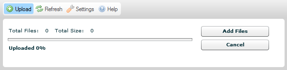
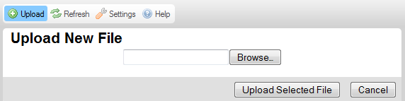
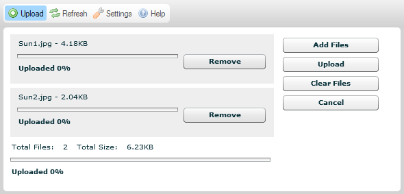
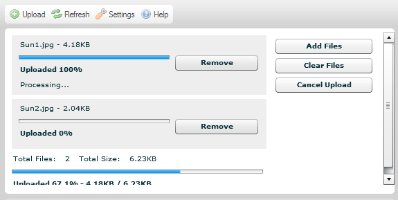
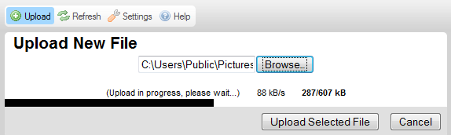

Tlačítko Nahrát (Upload), které je dostupné v CKFinder na Panelu nástrojů otevře Panel Nahrávání, který můžete použít pro přidání nových souborů do současné složky.
Obrázek níže představuje standardní Panel nahrávání v průzkumníku souborů, který je rozbalen při kliknutí na tlačítko panelu nástrojů.

Abyste zavřeli (sbalili) Panel nahrávání, stiskněte tlačítko Zrušit (Cancel) (pokud jste ještě nespustili proces nahrávání) nebo tlačítko Zavřít (Close). Můžete také kliknout znovu na tlačítko Nahrát (Upload).
Poznámka: Nahrávání je technický termín, který znamená činnost posílání souborů z Vašeho místního počítače do centrálního (také znám jako server).
Panel nahrávání CKFinder existuje ve dvou verzích, v závislosti na Vašem prostředí. Standardně je verze pro více nahrávání (která Vám umožní nahrát více souborů na server najednou) použita pro všechny prostředí, která podporují Adobe Flash. Pokud ale Váš místní systém Flash nepodporuje, budete stále mít možnost nahrát jednotlivé soubory v oddělených operacích díky záložní verzi.
Obrázek výše představuje výchozí Panel nahrávání, který má umožněno nahrávat více souborů najednou. Pro všechny systémy, které Flash nepodporují (včetně některých mobilních prohlížečů) bude použit následující formát Panelu nahrávání.

Standardně Vám CKFinder umožní nahrát několik souborů najednou. Abyste odeslali soubory na server, postupujte podle kroků popsaných níže.
Krok 1: Klikněte na tlačítko Nahrát (Upload) na panelu nástrojů pro otevření Panelu nahrávání.
Krok 2: Když je Panel nahrávání rozbalen, klikněte na tlačítko Přidat soubory (Add Files). Otevře se dialogové okno výběru souborů Vašeho operačního systému, které Vám umožní vybrat místní soubor k nahrání na server.
Poznámka: Můžete vybrat tolik souborů, kolik chcete tím, že je všechny najednou vyberte v dialogovém okně.
Krok 3: Místní soubor(y) bude nyní přidán do fronty nahrávání. Pokud chcete přidat další soubory do tohoto balíčku pro nahrávání, klikněte znovu na tlačítko Přidat soubory (Add Files) a zopakujte kroky popsané výše.

Krok 4: Pokud si rozmyslíte, které soubory na server nahrát, můžete vždycky jednotlivé soubory odstranit z fronty nahrávání kliknutím na tlačítko Odstranit (Remove) vedle souboru, nebo se rozhodnete zrušit celý proces nahrávání zvolením tlačítka Zrušit (Cancel) na Panelu nahrávání.
Krok 5: Pokud jste hotovi s procesem výběru souborů, můžete kliknout na tlačítko Nahrát (Upload) pro spuštění nahrávání. Postup celého procesu a také jednotlivých souborů můžete pozorovat na obrazovce.

Krok 6: Počkejte na ukončení nahrávání. Jakmile bude dokončeno, obsah složky bude obnoven a nahraný soubor bude vybrán v Panelu souborů.
Když Adobe Flash není na Vašem systému dostupný, nahrávání CKFinder bude plně funkční, bude ale omezeno na jeden soubor najednou. Abyste odeslali soubory na server, postupujte podle kroků popsaných níže.
Krok 1: Klikněte na tlačítko Nahrát (Upload) na panelu nástrojů pro otevření Panelu nahrávání.
Krok 2: Když je Panel nahrávání rozbalen, klikněte na tlačítko Přidat soubory (Browse). Otevře se dialogové okno výběru souborů Vašeho operačního systému, které Vám umožní vybrat místní soubor k nahrání na server.
Poznámka: Název tlačítka se může v různých prohlížečích lišit.
Krok 3: Místní soubor bude nyní přidán. Můžete nahrávat pouze jeden soubor najednou.
Krok 4: Pokud jste hotovi s procesem výběru souboru, můžete kliknout na tlačítko Nahrát zvolený soubor (Upload Selected File) pro spuštění nahrávání. Postup procesu nahrávání souboru můžete pozorovat na obrazovce.

Krok 5: Počkejte na ukončení nahrávání. Jakmile bude dokončeno, Panel nahrávání bude uzavřen, obsah složky bude obnoven a nahraný soubor bude vybrán v Panelu souborů.
Při nahrávání souborů se mohou objevit následující chyby.
Tato zpráva naznačuje, že název nahrávaného souboru je již používáním jiným souborem ve stejné složce. Aby nedošlo ke konfliktu, bylo k původnímu názvu připojeno pořadové číslo "(1)".
Soubor, který jste se pokusili nahrát, nebyl přijat.
Nejběžnější příčina této zprávy je, že CKFinder byl nastaven, aby nepřijímal druh souboru, který se snažíte nahrát, na základě jeho přípony. Toto je bezpečnostní omezení. Je také možné, že velikost souboru je pro Váš systém příliš velká. Pokud tomu tak je, server musí být nastaven pro přijetí větších souborů.
Nahrávaný soubor obsahuje HTML kód. Z bezpečnostních důvodů pouze soubory s vybranou příponou mohou obsahovat kód HTML.
Prosím kontaktujte Vašeho správce systému pro získání více informací ohledně přijímaných typů souborů a jejich dovolených velikostí.